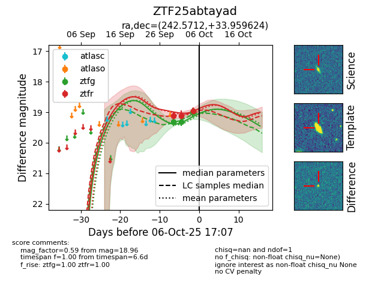
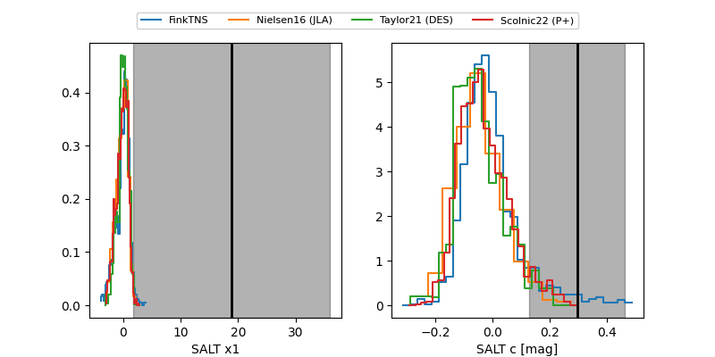

FINK: ZTF25abtayad
Lasair: ZTF25abtayad
ALeRCE: ZTF25abtayad
ZTF25abtayad (ztf,fink)
equatorial (ra, dec) = (242.5712,+33.95962)
galactic (l, b) = (54.6956,+47.05862)


last ztfg=19.00, ztfr=18.96
3 ztfg, 3 ztfr detections